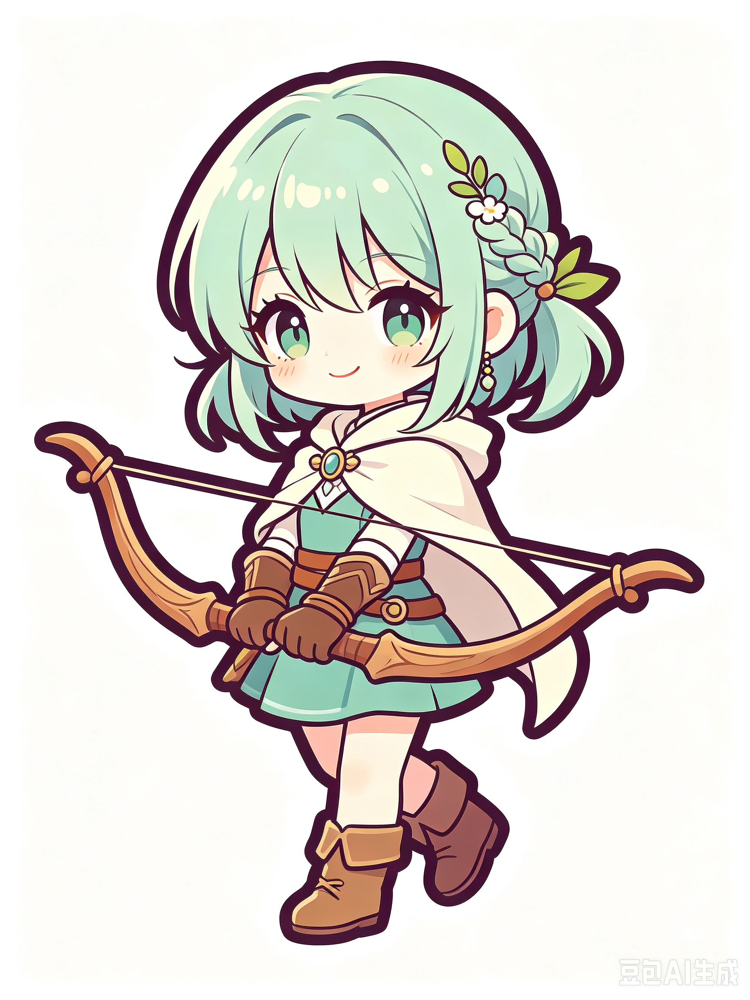
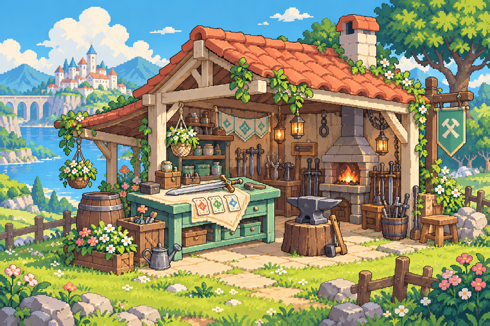

✿◆≈✦→≈
换个落点01 / 推移
往旁边，请让一让。
推、拉、换位。把敌人送进水里，或挪开它的攻击路线。位置，本身就是武器。
一场小小的战术冒险 · 开发中
敌人的下一步，已经写在棋盘上。
带上三位伙伴，用一张牌、一次推移，
把危机变成你的好主意。
Windows 64 位 · 单人 · 免费开发试玩

小队已就位等一个好主意。A LITTLE MOVE, A BIG DIFFERENCE
不用每次都把敌人打倒。
有时，让它打空就够了。
推、拉、换位。把敌人送进水里，或挪开它的攻击路线。位置，本身就是武器。
多座星灯共享耐久。读懂下一轮攻击，让队员挡线、让敌人打空，守住整个网络。
装备自带卡牌。在营火打磨装备、精修卡牌，让小队逐渐长成你喜欢的样子。
上方小图为玩法示意；实际效果与完整界面见实机截图。

旅途中的片刻休息FROM THE GARDEN
V56 开发试玩实机截图
点击图片，放大看看。
YOUR ADVENTURE STARTS HERE
《星庭巡游》V56 · 免费开发试玩
下载 Windows 试玩独立试玩不读取或覆盖已有存档；关闭后清空本次进度。
想保存旅程？使用同目录的 StarGarden.exe。
这次提供 Windows 下载版；这个网页是游戏介绍页。解压下载包后即可在本机试玩。
这是 V56 开发试玩。首局体验、画面与平衡仍在调整；部分小窗口文字偏小，一些装备共用卡图。它还会继续成长。
在 GitHub Issues 留言。最想听你说：哪次推移很有趣、哪里没看懂、第一次犹豫发生在哪一步。欢迎附上截图和版本号。
部分插画与开发工作使用 AI 辅助。美术来源及公开再分发许可仍在核对，相关状态和第三方许可证保留在试玩包 licenses 文件夹中。